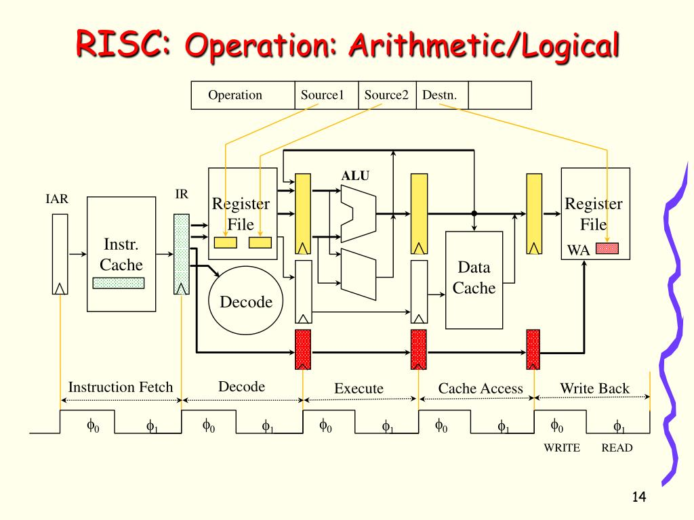
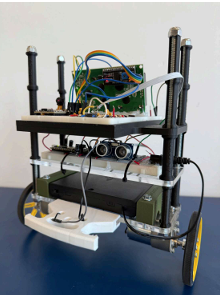
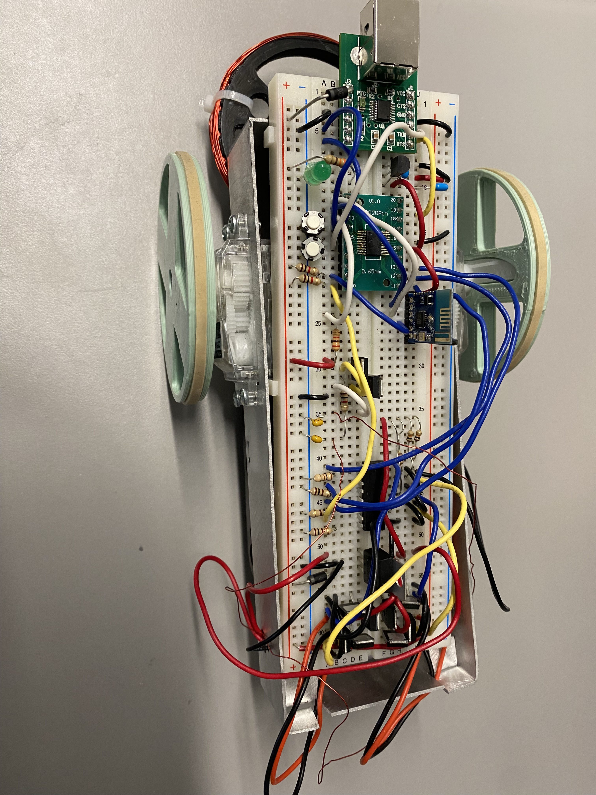
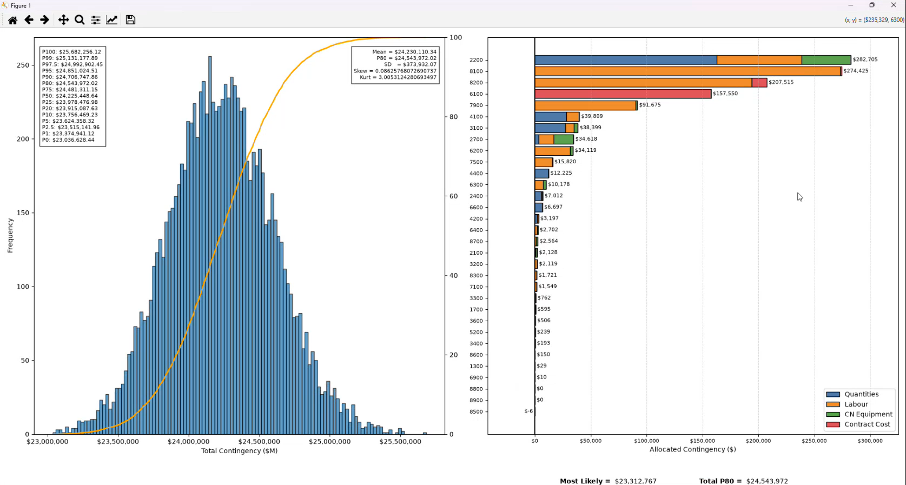
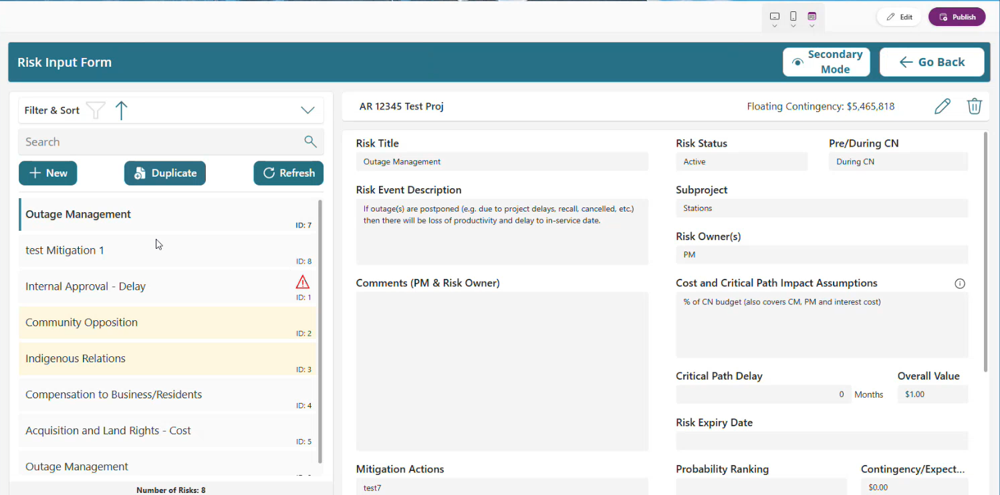
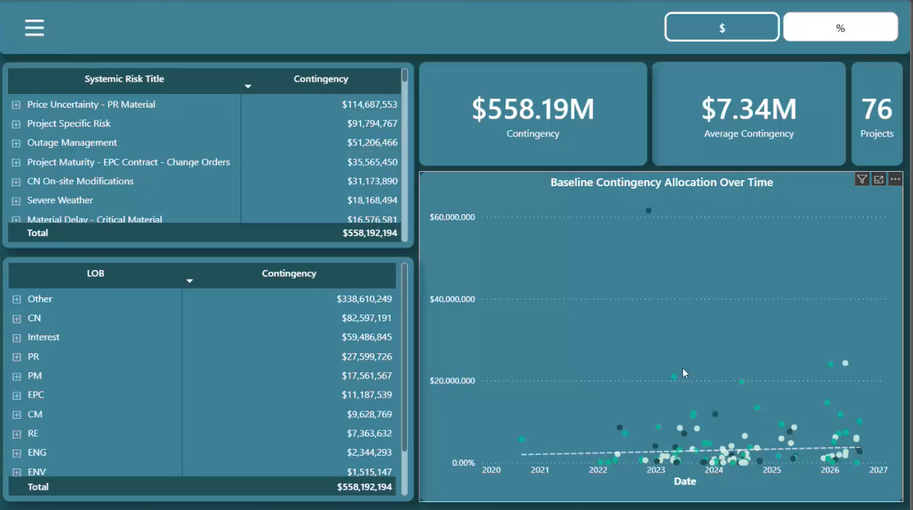

Photo of the vestibular stimulator
(images/stimulator.jpg)
(images/stimulator.jpg)
B.S. in Electrical Engineering, University of British Columbia. I design digital hardware, embedded systems and robots, and I write the software and analysis tools around them.
Click either side of the robot to shove it.
School builds, personal builds and software from my work term on the Hydro One project risk team.

Built over the course of several months and used to add, store, and pull from memory simple arithmetic values. Created and tested a cpu, shifter, decoder and ALU all in SystemVerilog.

A two-wheeled robot that holds itself upright. The demo at the top is a simplified simulation of the same control problem.

Robot that uses inductance through a coil to detect metal and is controlled remotely by a MSP430 microcontroller.

A Python tool that simulates project risks and estimate uncertainty to set contingency. It models correlations with a Gaussian copula, samples with Latin Hypercube, allocates contingency by covariance and exports charts to Excel through a PyQt6 app. I checked its distributions against @Risk.

I built a risk app and accompanying SharePoint database to store all risk data in one central location. This enabled the risk team to do more complex data analysis along with process automations (automatic emails, mitigation action reminders, etc.).

Built a dashboard to help analyze risk data, can now show how much money we spend on individual risks, if allocated contingency is being used, and at was point along the projects completion timeline is the contingency used.
I am a Electrical Engineering Graduate from the University of British Columbia. I am a hard working curious individual in search for a postion that will contantly teach me new things.
My work term on the Hydro One project risk team taught me to apply myself independently. I am searching for opportunities that will challange me further.
I am currently looking for opportunities to apply my skills in software development and embedded systems.
kiran@grey-wolf.ca GitHub LinkedIn